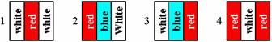

1023. Флаги
В День Государственного Флага России владелец магазина, торгующего символикой, решил украсить витрины своего магазина горизонтальными рядами из N вертикальных полосок белого, голубого и красного цветов. Он бы хотел, чтобы эти ряды удовлетворяли следующим требованиям:
1. Полоски одинаковых цветов не должны находиться рядом.
2. Голубая полоска всегда должна находиться между белой и красной, либо между красной и белой полосками (как следствие, она не может быть крайней).
Ваша задача – определить, сколькими способами владелец магазина сможет украсить витрины, при условии, что количество имеющихся у него полосок каждого из цветов принимается за бесконечное.

Входные данные:
Во входном файле содержится одно число N: .
Выходные данные:
Выведите в выходной файл одно число M – количество различных вариантов декорации витрин.
Пример:
|
Пример теста |
Пример ответа |
|
1 3 |
4 |